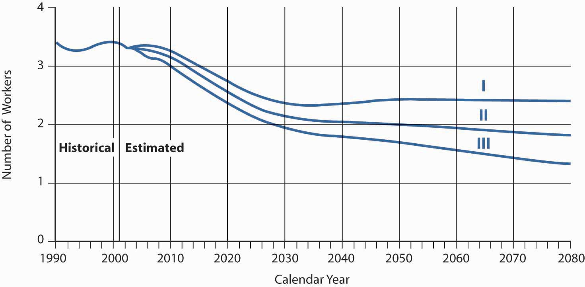
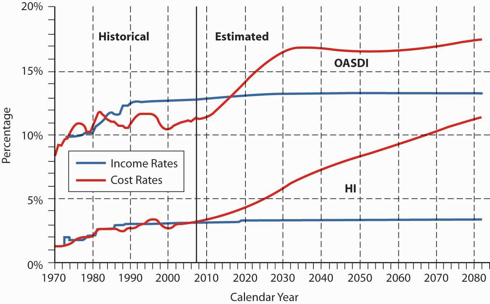

In this section we elaborate on the following:
During the 2000 presidential election campaign, Social Security financing was the most heated issue, with the debate focusing on privatization and moving away from the pay-as-you-go system. When the stock market was booming and everyone believed they could do better by investing their own funds, the idea of moving away from the current system became very appealing; however, their tune changed after the large decline in the stock market. The immediate big issue in early 2006 was how to help those who could not pay the deductibles and coinsurance for the new drug program. The major funding problems are still at issue.
Social Security and Medicare were originally designed to operate with advance funding, but for many years they have operated on an unfunded, pay-as-you-go basis. As a result, this generation of workers is paying for the benefits of current beneficiaries. Social Security taxes have increased much faster than the general level of prices and even faster than the cost of health care during the past two decades.
As described in the box “Does Privatization Provide a More Equitable Solution?” and depicted in Figure 18.2 "Number of Workers per OASDI Beneficiary", the number of retired workers has increased faster than the number of those working. In 1945, there were forty-two workers per retiree. Currently, this has decreased to approximately three workers per retiree and is expected to decline to two by 2020. The Social Security funding burden is being borne by a shrinking sector of society because birth rates have declined and longevity has increased. This trend will continue as the baby boomers move out of the work force and into retirement. Retired workers are concerned about the certainty of their benefits and future required tax rates. The current generation of taxpayers has serious doubts about the ability of the Social Security system to deliver benefits at current inflation-adjusted levels.
Such doubts are understandable, considering recent problems of the OASI program, which is by far the largest part of the system. Each year, the trustees of the Social Security and Medicare trust funds report on the funds’ status and their projected condition over the next seventy-five years. The 2008 Annual Reports continue to show that both Social Security and Medicare need serious reform.Social Security and Medicare Board of Trustees’ Summary of the 2008 Annual Reports on the status of the Social Security and Medicare Programs. The goal of the public trustees is to approach the current state of Social Security and Medicare in a nonpartisan way. They aim to ensure the integrity of the reports, both in methods of preparation and in the credibility of the information they contain. Realizing that numerous assumptions must be made to predict the future condition of the funds, the trustees prepare these reports because they believe the reports paint the most reliable picture available today. This summary is available online at http://www.ssa.gov/OACT/TRSUM/trsummary.html. Both programs face a long-term financing gap. Closing the gap between monies going into the Social Security and Medicare funds and monies coming out of the funds will be a challenge. It will force the government to come up with innovative solutions to fixing the long-term deficits.
As Figure 18.3 "Long-Range OASI and DI Annual Income Rates and Cost Rates (as a Percentage of Taxable Payroll), Trustees Report 2008" shows, the OASDI and HI trust funds are expected to be adequately financed for only the next ten years (depending on the actuarial assumptions).2005 OASDI Trustees Report, Section II: Overview, http://www.ssa.gov/OACT/TR/TR02/II_highlights.html#76460. Figure 18.4 "OASDI and HI Income Shortfall to Pay Scheduled Benefits, and the 75 Percent General Fund Revenue Contribution to SMI (Percentage of GDP), Trustees Report 2008" shows the deficits of the Medicare Parts B and D trust funds. The deficits are expected to grow rapidly.
Figure 18.2 Number of Workers per OASDI Beneficiary
Source: OASDI Trustees Report, http://www.ssa.gov/OACT/COLA/CBB.html.
Figure 18.3 Long-Range OASI and DI Annual Income Rates and Cost Rates (as a Percentage of Taxable Payroll), Trustees Report 2008
Source: Social Security and Medicare Board of Trustees, “A Summary of the 2008 Annual Reports,” April 22, 2008, http://www.ssa.gov/OACT/TRSUM/trsummary.html (accessed April 5, 2009).
Figure 18.4 OASDI and HI Income Shortfall to Pay Scheduled Benefits, and the 75 Percent General Fund Revenue Contribution to SMI (Percentage of GDP), Trustees Report 2008

Source: Social Security and Medicare Board of Trustees, “A Summary of the 2008 Annual Reports,” April 22, 2008, http://www.ssa.gov/OACT/TRSUM/trsummary.html (accessed April 5, 2009).
Whether the objective of the Social Security program should be to provide a “floor of protection” or a “reasonable level of living” remains debatable. Reform will require agreement, however, by politicians and the public on not only what benefits citizens are entitled to, but what benefits taxpayers are willing to fund. See the box “The Future of Social Security,” for a discussion of this topic.
In many countries, financing the government social security system has become increasingly difficult for several reasons. Benefit levels have increased in many nations, to the point where the tax rates necessary to support benefits are at an all-time high. For example, free or very-low-cost medical care may be available to everyone, disability benefits may require little proof of inability to work, and generous disability payments may result in the moral hazard of malingering. Demographic trends in other industrialized nations mirror those in the United States: the population is aging, so fewer workers finance the pay-as-you-go system for retirees. The declining birth rate suggests that this trend is unlikely to be reversed. In addition, other governments also face the problem of growing budget deficits. Governments in some developing countries may be perceived as unable to administer the social security system fairly and efficiently.
Experts anticipate a shift from public sector social insurance plans to private sector plans, especially for retirement benefits. Private sector organizations, particularly insurance companies, have successfully managed retirement savings and income for decades and are in a position to improve management and funding practices. Several countries have already begun to privatize the social security system, namely, Chile, Peru, Mexico, Italy, and Japan. In Chile (beginning in 1981) and Peru (in 1993), for example, workers are required to contribute to their own retirement fund, and contributions are invested by a private pension fund manager selected by the worker. In both these countries, the prefunded privatized system appears to be working well. Some countries also are moving toward privatized medical care systems.
The trend toward privatization is worldwide, including both industrialized and developing countries. The potential for market expansion for insurers and other financial institutions is tremendous.
The threat to the stability of Social Security has been apparent for decades. For years, political leaders have agreed that something must be done…. We can postpone action no longer. Social Security is a challenge now; if we fail to act, it will become a crisis. We must save Social Security and we now have the opportunity to do so.
With these words, on May 2, 2001, President George W. Bush established the Presidential Commission to Strengthen Social Security.
The crisis President Bush was referring to is the declining numbers of new workers paying into the Social Security system. Fewer births and longer life expectancies are causes. In 1940, when the first benefits were paid, there were more than forty workers paying for each retiree receiving benefits. In 1960, there were five workers for each retiree. Today, there are 3.4 workers paying for each beneficiary. With the baby boom generation set to retire over the next few decades, that number is expected to fall even further. The Presidential Commission’s report estimates that the ratio will be 2.2:1 in 2025 and just 2:1 by 2050.
These demographic changes mean that the burden of paying for Social Security will fall ever more heavily on the younger generation of workers. When polled, 41 percent of young people (ages eighteen to thirty-four) said that they do not expect to receive Social Security benefits at today’s level when they retire, while 31 percent expected to receive no benefits at all.
Certainly, current benefit levels cannot be maintained without raising Social Security withholding taxes or extending the normal retirement age. But is it fair to tax younger workers more heavily to pay for their parents’ retirement? Will there even be any money left for their own retirement? One solution that has been proposed is individual investment accounts that would allow individuals to invest a percentage of their Social Security savings themselves. Proponents of privatization argue that it would allow greater returns than the traditional Social Security system.
In the heady days of soaring stock prices and budget surpluses, just before President Bush created the commission, privatization was a popular solution. Workers, it was argued, could invest their Social Security funds in the stock market and see great returns. Low-wage workers would become shareholders in the U.S. economy and be able to accumulate wealth. Money would flow into the economy.
With the economic recession that began in 2008, privatization has lost momentum. But even when the plan was first proposed, it faced opposition on a number of grounds. The pay-as-you-go system is a guaranteed benefit. With many retirees depending on Social Security as their main source of income, this guarantee is crucial. But what happens if an individual invested unwisely? Proponents of a private system argue that an education campaign, along with requirements for diversification and safeguards against high-risk investments, should prevent such losses.
Another argument against privatization is the distortion it could cause in the stock market. With a large number of funds flowing into mutual funds from Social Security investors, prices might be driven up artificially. Government-approved mutual funds would receive a huge windfall in fees.
Most young people, who politicians have argued would benefit the most from privatization, do not support changing the Social Security system but would rather see the existing system strengthened. A majority polled say that “making sure that people receive a decent, guaranteed monthly retirement benefit” is a higher priority than “making sure that people receive a better rate of return.”
Questions for Discussion
Sources: Key findings from Hart Research Poll, July 24, 1998; “Young Americans and Social Security: A Public Opinion Study Conducted for the 2030 Center by Peter D. Hart, Research Associates,” July 1999, accessed April 5, 2009, http://www.commondreams.org/pressreleases/july99/072299a.htm; President’s Commission to Strengthen Social Security, “Final Report: Strengthening Social Security and Creating Personal Wealth for All Americans,” December 21, 2001 (this document includes all appendixes and Estimates of Financial Effects for Three Models Developed by the President’s Commission to Strengthen Social Security, prepared by the Office of the Chief Actuary, Social Security Administration, May 2, 2001); Gary Burtless, “Social Security Privatization and Financial Market Risk,” Center on Social and Economic Dynamics, Working Paper No. 10, February 2000; Social Security Administration, “Little Change in Social Security Solvency (Trustees Recommend Timely Action),” March 23, 2005, accessed April 5, 2009, http://www.ssa.gov/pressoffice/pr/trustee05-pr.htm.
A quick glance at Figure 18.3 "Long-Range OASI and DI Annual Income Rates and Cost Rates (as a Percentage of Taxable Payroll), Trustees Report 2008" shows that the costs of Social Security are rising faster than the payments into the system. In the 2008 Annual Report to Congress, the Trustees announced the following:
Figure 18.3 "Long-Range OASI and DI Annual Income Rates and Cost Rates (as a Percentage of Taxable Payroll), Trustees Report 2008" and Figure 18.4 "OASDI and HI Income Shortfall to Pay Scheduled Benefits, and the 75 Percent General Fund Revenue Contribution to SMI (Percentage of GDP), Trustees Report 2008" are from the 2008 OASDI Trustees Report on the current and projected financial condition of all the Social Security programs. (The six trustees of the board are the Secretary of the Treasury, the Secretary of Labor, the Secretary of Health and Human Services, the Commissioner of Social Security, and two members appointed by the president.) The programs are financed through four separate trust funds: the Old-Age and Survivors Insurance (OASI) Trust Fund, Disability Insurance (DI), and two for Medicare.
To project future effects on the bottom line, the trustees review available evidence and gather expert opinion about all the factors that affect income and expenditures: demographic (birth rate, mortality, immigration); economic (unemployment rates, inflation); and program-specific (retirement patterns, disability incidence). The trustees make both short-range (ten-year) and long-range (seventy-five-year) predictions.
Traditional solutions to the looming Social Security and Medicare budget crisis have focused on increasing these taxes and cutting benefits. President G. W. Bush, in his State of the Union address on January 31, 2006, called for a bipartisan committee to find a solution to the impending major shortfall as the baby boom generation begins retirement. President Bush and many members of Congress believed the answer was privatization—allowing workers to invest some or all of their own (private) Social Security funds in the stock market, which historically yields greater returns over long investment periods than Treasury securities do. Beliefs in an ownership society and personal responsibility lie behind this objective. After Chile’s successful move to privatization in 1981, almost every South American country has followed suit, with positive results. Countries from Singapore to Hungary have also converted successfully. With the economic recession of 2008 and the arrival of a new administration, focus has shifted from Social Security as a major political issue. But there are many arguments on both sides, and it remains to be seen how the Social Security system will be preserved.
Sources: Merrill Matthews, Jr., “A 12-Step Plan for Social Security Reform,” National Center for Policy Analysis, June 4, 1998, http://www.ncpa.org/ba/ba267.html (accessed April 4, 2009); Social Security Administration, the 2008 OASDI Trustees Report, June 11, 2008, http://ssa.gov/OACT/TR/TR08/trTOC.html (accessed April 4, 2009).
In this section you studied problems with the Social Security program in the United States and examples of global trends in administering social insurance: